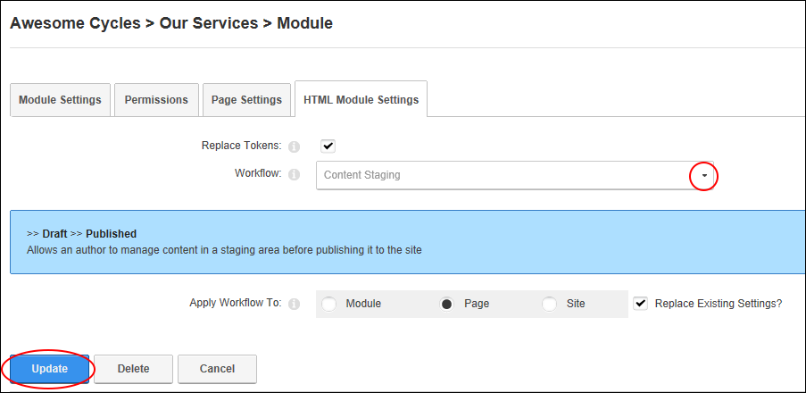

Setting a Workflow (HTML Module)
How to set the workflow for an individual HTML module.
-
Select the HTML Module Settings tab.
-
At Workflow, select the workflow you wish to use from these
options:
-
Content Staging: Content staging allows content to be saved
as a draft before it is published. Draft content will only be
visible when edit mode is selected by users who can edit the
module/page. In view mode the most recent published version of
content will be displayed instead of the draft. This is the same for
users with view permissions only. See "Publishing a Draft (HTML Module)"
-
Direct Publish: With the direct publish workflow any content
that is saved on the Edit Content page or through the inline editor
will be immediately visible to all users with permissions to view
the module. Editing users will be able to see the content for both
view and edit mode.
- Click the Update link.

Setting the Workflow for a HTML Module